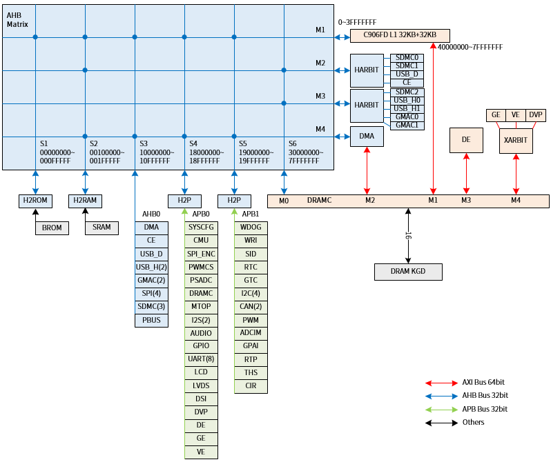

5.2. BUS¶
总线框图如 图 5.7 所示。

图 5.7 总线框图¶
总线空间分配及内存属性如 表 5.3 所示。
地址空间定义 |
CPU SYSMAP 硬件定义（机器模式内存属性） |
|||||||
|---|---|---|---|---|---|---|---|---|
空间段 |
起始地址 |
结束地址 |
大小 |
变量 |
ADDR |
SO |
C |
B |
BROM |
0x00000000 |
0x000FFFFF |
1MB |
SYSMAP_BASE_ADDR0 |
28’h00100 |
0 |
1 |
1 |
SRAM |
0x00100000 |
0x0FFFFFFF |
255MB |
SYSMAP_BASE_ADDR1 |
28’h10000 |
0 |
1 |
1 |
DEVICE |
0x10000000 |
0x1FFFFFFF |
256MB |
SYSMAP_BASE_ADDR2 |
28’h20000 |
1 |
0 |
0 |
C906 |
0x20000000 |
0x2FFFFFFF |
256MB |
SYSMAP_BASE_ADDR3 |
28’h30000 |
1 |
0 |
0 |
RESERVE0 |
0x30000000 |
0x3FFFFFFF |
256MB |
SYSMAP_BASE_ADDR4 |
28’h40000 |
0 |
1 |
1 |
DRAM |
0x40000000 |
0x7FFFFFFF |
1GB |
SYSMAP_BASE_ADDR5 |
28’h80000 |
0 |
1 |
1 |
RESERVE1 |
0x80000000 |
0xBFFFFFFF |
1GB |
SYSMAP_BASE_ADDR6 |
28’hC0000 |
0 |
1 |
1 |
RESERVE2 |
0xC0000000 |
0xFFFFFFFF |
1GB |
SYSMAP_BASE_ADDR7 |
28’h100000 |
0 |
1 |
1 |